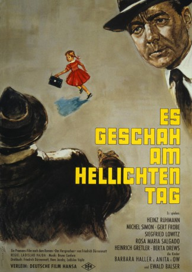

#2293 Es geschah am hellichten Tag
Alternativ: It Happened in Broad Daylight (Originaltitel)
 
 IMDB-Wertung: 7.9 / 10
IMDB-Wertung: 7.9 / 10  Metascore: 0
Metascore: 0 
In einem Wald in der Nähe einer Straße wird ein ermordetes Mädchen gefunden. Die Polizei ist nervös, denn zwei ähnliche Morde, die vor einigen Jahren verübt worden waren, konnten bisher nicht aufgeklärt werden. Der Hausierer Jacquier wird sofort der Tat verdächtigt, obwohl er selbst die Polizei auf die Leiche des Mädchens aufmerksam gemacht hatte. Doch Kommissar Matthäi ist von Jacquiers Unschuld überzeugt. Er hat den Eltern der ermordeten Gritli Moser "bei seiner Seeligkeit" versprochen, dass er den Mörder finden wird. Er erinnert sich an eine Zeichnung des ermordeten Kindes, auf der kleine stachelige Bälle, ein sehr großer Mann und ein Auto zu erkennen waren. Es könnten Trüffel sein, die ein Mann mit einem Auto dem Opfer geschenkt hat. Matthäi mietet eine Tankstelle an der Straße. Er nimmt die junge Frau Heller und ihr Töchterchen Annemarie als Lockvogel ins Haus. Aber sind seine Schutzmaßnahmen für das Kind ausreichend?
Jahr: 1958
Dauer: 100 Minuten
FSK: 12
Land: West-Deutschland Studio: Deutsche Film HansaTonspuren:
Untertitel:
Auflösung: 1080p (1440x1080) Größe: 6922 MB
Genre: Krimi, Thriller, Drama
Regisseur: Ladislao Vajda
Drehbuch: Friedrich Dürrenmatt, Friedrich Dürrenmatt, Friedrich Dürrenmatt, Hans Jacoby, Ladislao Vajda
Soundtrack: Bruno Canfora
Darsteller:
 Heinz Rühmann als Oberleutnant Matthäi
Heinz Rühmann als Oberleutnant Matthäi- Michel Simon als Jacquier
 Gert Fröbe als Schrott
Gert Fröbe als Schrott- Ewald Balser als Professor Manz
- Roger Livesey als Professor Manz
- Sigfrit Steiner als Detektiv Feller
- Siegfried Lowitz als Leutnant Henzi
- Heinrich Gretler als Polizeikommandant
- Berta Drews als Frau Schrott
- María Rosa Salgado als Frau Heller
- Anita von Ow als Annemarie Heller
- Barbara Haller als Ursula Fehlmann
- Emil Hegetschweiler als Gemeindepräsident
- Rene Magron als Polizeibeamter Weber
- Max Werner Lenz als
- Hans Gaugler als Herr Moser
- Ettore Cella als Tankstellenbesitzer
- Margrit Winter als Frau Moser
- Traute Carlsen als
- Anneliese Betschart als Lehrerin
- Max Haufler als
Datei: X:\1950-1959\Es geschah am hellichten Tag (1958, FSK12, 1440x1080).mkv seit 26.10.2015
Festplatte: HD 1900-1970
 Es gibt insgesamt 141 Filme in der Gruppe '1950-1959'
Es gibt insgesamt 141 Filme in der Gruppe '1950-1959'